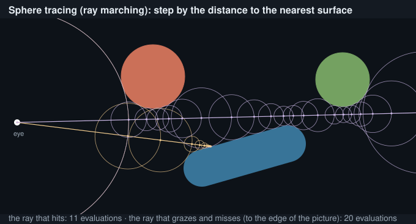
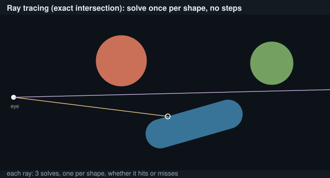
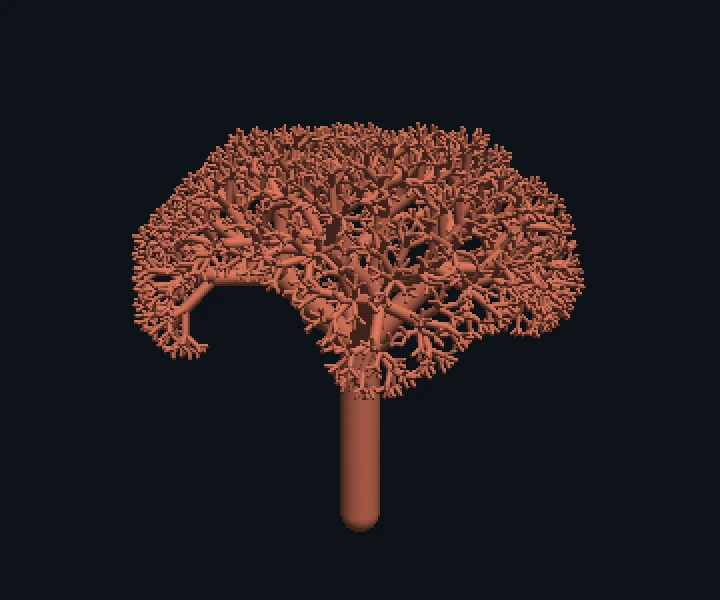
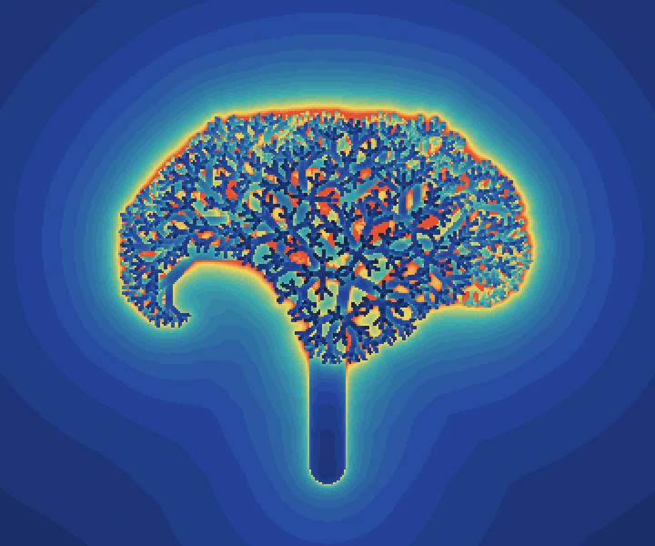
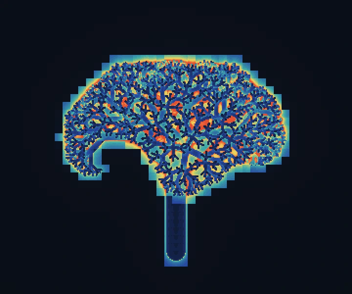
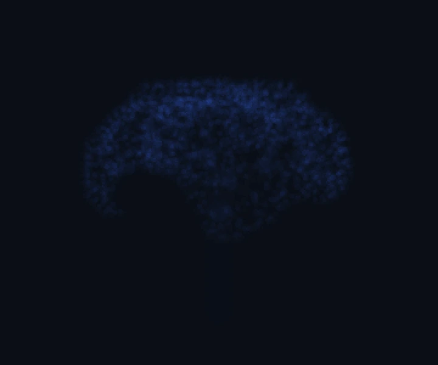
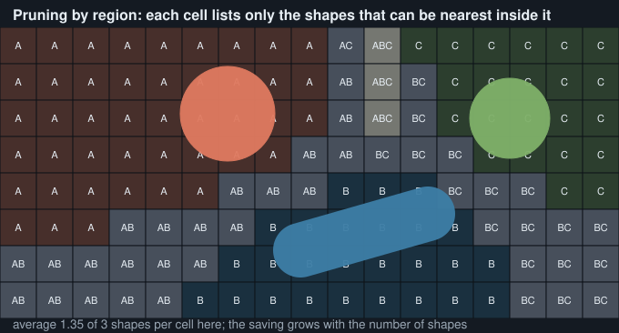
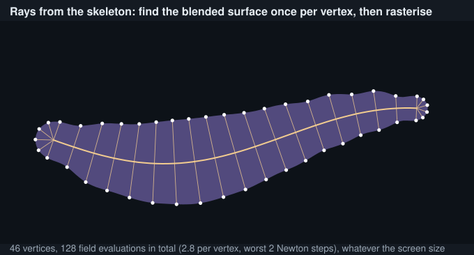
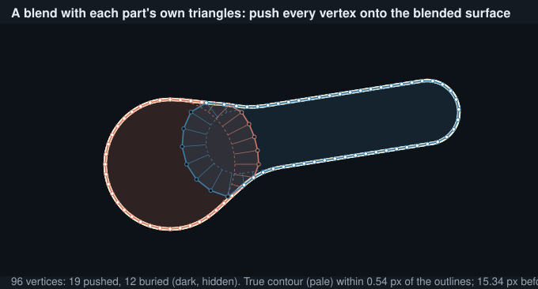

Marching, tracing, and what to do instead
Every picture here is computed by tools/explain_marching*.ts. The counts are operations on the CPU for one small picture. They show where the work goes. They are not GPU milliseconds.
- Yes, work can be cached per region and shared. It comes in three forms, and all three are published and fast: one coarse march per screen tile, a short list of the shapes that matter per cell of space, and distances stored in a grid.
- Sharing a coarse march cut the work 3 times on the tree below. All of that came from proving empty tiles empty. It saved nothing inside the branches.
- Not marching cut it 44.7 times. The same tree, listed as 5,461 branches and intersected exactly, needs 1.7 ray solves per pixel against 76 distance evaluations.
- For a body with a skeleton, solve once per vertex. 2.8 field evaluations per vertex find a blended surface, at any screen size.
1. Two ways to ask a ray where the surface is


Rasterising triangles is the third way: the surface is listed as triangles and the hardware finds which pixels each covers. It costs per triangle and per covered pixel, and it is what GPUs are built for.
2. Where the marching work goes
One tree: a single branch folded 6 times, so one call of its distance function evaluates 7 capsules and stands for 5,461 branches. Picture size 360x300; the tree covers 19.6% of it. Brighter means more work at that pixel, on one scale for all three cost pictures.




| Way of drawing | Operations | Per pixel | Times fewer than A | Pixels that differ from A |
|---|---|---|---|---|
| A. March every pixel | 8,212,834 | 76 | 1 | 0 |
| B. One coarse march per 8×8 tile, then march | 2,701,405 | 25 | 3 | 17 |
| C. List the branches, solve each exactly | 183,842 | 1.7 | 44.7 | 172 |
- 75.5% of the marching work is spent on rays that miss. They take 10.2 steps each on the way past. The glow around the tree in picture A is that waste.
- The shared coarse march removes that waste and nothing else. It proved 1,279 of 1,710 tiles empty. Inside the tree the cost is unchanged, because a ray threading between twigs is never far from one.
- Inside the outline, the list is about 11 times cheaper. A marched hit takes 13.5 steps of 7 capsules; a listed pixel tests the few branches that cover it.
- An operation in A and B is one capsule distance. In C it is one ray-against-capsule solve, which is roughly two to three times the arithmetic (my estimate, not measured).
- C differs from A in 172 of 108,000 pixels. A folded copy is cut off where it crosses a mirror plane; a listed copy is not.
3. Sharing work per region

| What is cached per region | Removes | Published result | |
|---|---|---|---|
| One coarse march per screen tile, shared by its pixels | The empty lead-in before an object | Picture B here: 3 times. Polychronakis and others (2023) claim up to 20.4 times in a headset with foveation | B measured here |
| The shapes that matter, per screen tile | Most of the cost of each evaluation | Zanni (2023): 142 blended shapes, 57.8 ms down to 7.3 ms at 1720×1376 on an RTX 2080, against per-pixel lists | read in the paper |
| The shapes that matter, per cell of space | Most of the cost of each evaluation | Barbier and others (2025): about 1 shape left per cell on average. A 43-shape character at 1080p on a laptop RTX 4060: 1.0 ms to prune and 2.8 ms to trace, 8 times faster than without. A 1,989-shape crowd: 5.5 ms and 8.4 ms, 227 times faster | read in the authors' slides |
| Distances stored in a grid of bricks | The whole evaluation (one texture read) | Used in Unreal's Lumen and in Claybook (from memory, not rechecked). No timing checked | not checked |
So the best published marching of a blended character costs about 4 ms for a full 1080p frame on a laptop RTX 4060, with one shadow ray. The cost falls with the pixels an object covers, so a small object costs a fraction of that. Pruning is paid again every frame, and integrated graphics is slower. Whether this fits under 1 ms per object on our machines is not known.
4. Solve once per vertex

5. A blend with each part's own triangles

| How far a vertex may be pushed | 96 vertices | 192 | 384 | 768 |
|---|---|---|---|---|
| A quarter of the blend radius | 2.46 | 0.85 | 0.39 | 0.30 |
| Half the blend radius | 0.54 | 0.14 | 0.03 | 0.01 |
The numbers are the largest distance, in pixels, from the true blended contour to the pushed outlines. With a quarter of the radius the outlines stop at the seam and the error stalls. With half, each runs on past the seam and the error falls four times per doubling. Before the push it is 15.34 px. This is a 2D test of two convex parts; nothing is built in 3D. After the push, displacement and twists are ordinary moves of vertices, which triangles do for free.
6. Four ways Loft can draw a field
| Schedule | For | Cost grows with | Status |
|---|---|---|---|
| Solve onto the body: one root per vertex along the body's own rays | Blended bodies with a skeleton | Vertices | Counted in 2D here; not built |
| Unfold: list the copies a fold makes and intersect each exactly | Finite folds of simple parts: coral, trees, rows of spines | Copies on screen | Built. The coral: 1.3 to 1.5 ms of GPU time against 4.9 to 6.8 ms marched |
| March inside each part's own hull, with only its blend neighbours | Blends with holes or overhangs | Covered pixels × a short march | Derived, with a proof that needs an exactly local blend; not tested |
| March a cached grid, starting from a shared coarse pass | True fractals, endless repeats, warped rock | Covered pixels × steps | Bricks built. The coral: 4.9 to 6.8 ms against 12.6 to 16.4 ms before. The shared coarse pass is not built |
The reasoning, the sources and what is not known are in docs/tracing_sota.md.
Pictures elsewhere worth seeing
- Lipschitz Pruning, the authors' slides: the per-cell pruned trees, the pruning-ratio pictures and the results table quoted above.
- Keeter, Massively Parallel Rendering of Complex Closed-Form Implicit Surfaces: tiles classified as empty, full or undecided.
- Keeter, Gradients are the new intervals: one centre sample in place of interval arithmetic.
- Zanni, Synchronized-tracing of implicit surfaces: per-tile lists for blended shapes.
- Quilez, raymarching distance fields and intersectors: the two halves of section 1.